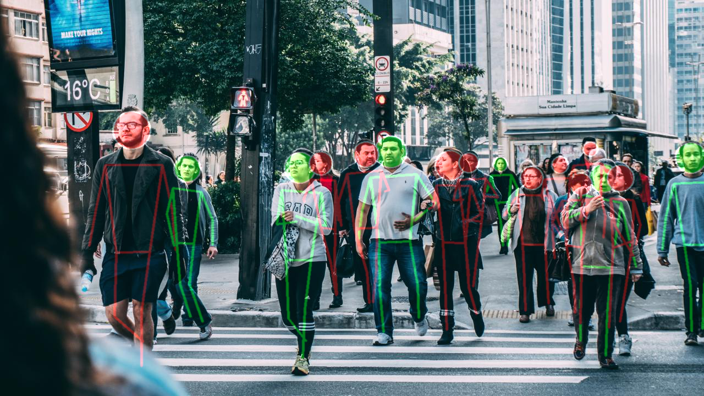

Quick Summary
What is in-the-wild eye contact detection, why is it important, and how do we define it?

In-the-wild eye contact detection Typical scene for eye contact detection in the wild, where pedestrians might be far from the camera and heavily occluded. Our method estimates, from predicted body poses, whether people are paying attention (showed in green) through eye contact with a self-driving agent, or are distracted (showed in red). This information can then be used as an external modality to better forecast their behaviors and to reduce the risk of collision.
Contributions
This paper proposes a novel method for eye contact detection which is a practically important task to better understand and forecast human behaviors when it comes to autonomous driving scenarios. In particular, autonomous robots need to solve this task to navigate safely around humans. We have introduced a new deep learning approach for eye contact detection in the wild, with no prior knowledge on the environment, which is suited to the multiple challenges associated with this task.
Through this work we also release LOOK, a large-scale dataset for eye contact detection in the wild. We designed it with real-world generalization in mind, by annotating three common autonomous driving datasets to consider cross-dataset training and evaluation, and focus on multiple scenarios and various environments.

Prediction output from one of our trained models on our LOOK test set. By escaping from the 2D space of the image using low-dimensional information (human keypoints), the model is able to generalize over various scenarios and contexts